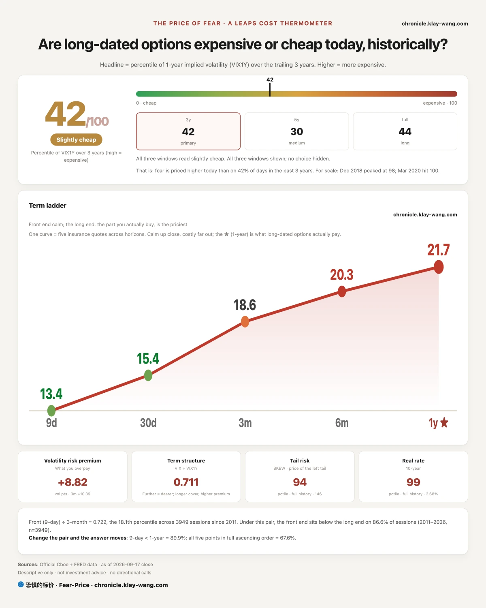
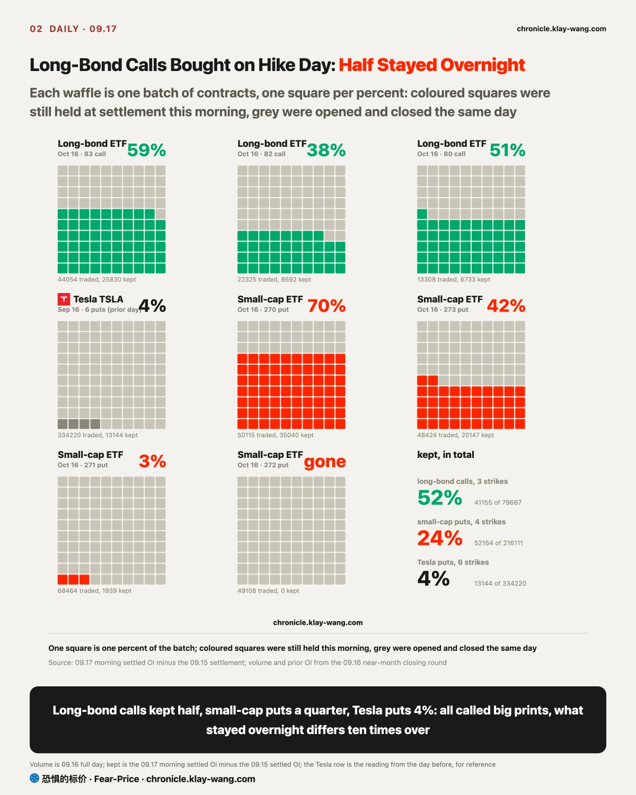
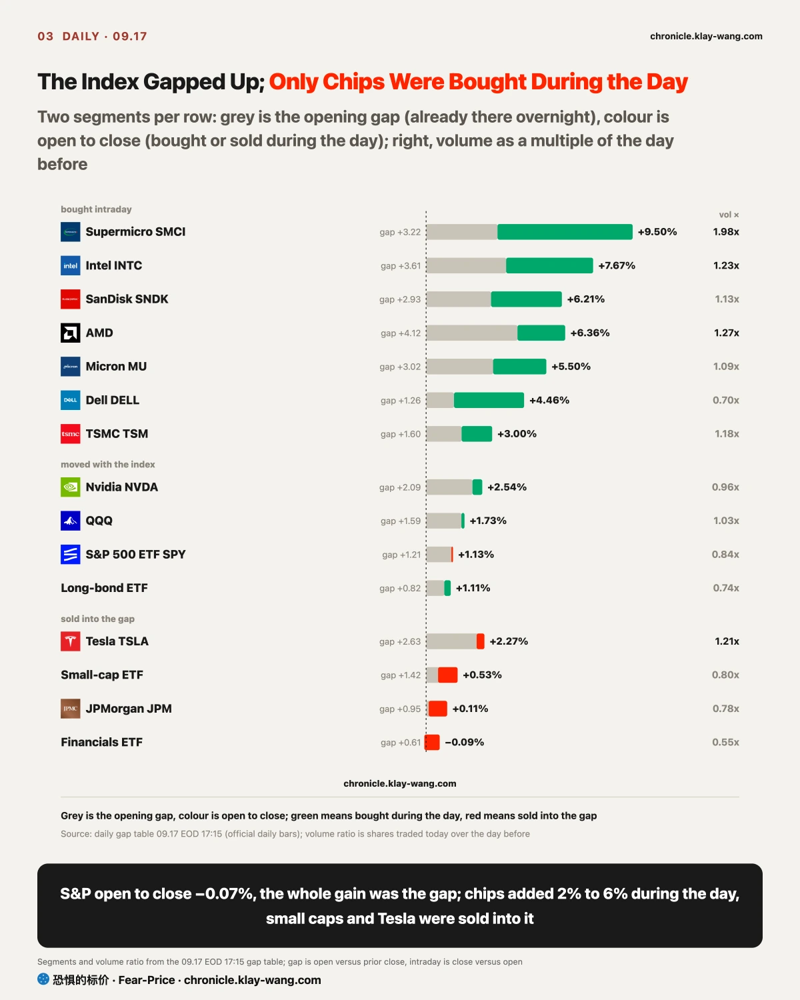
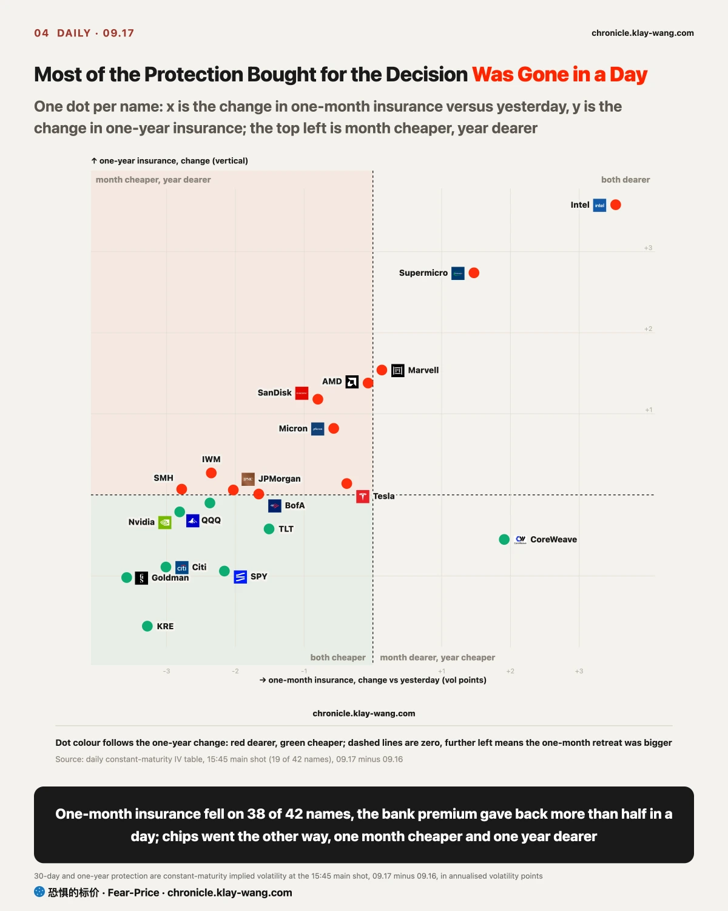
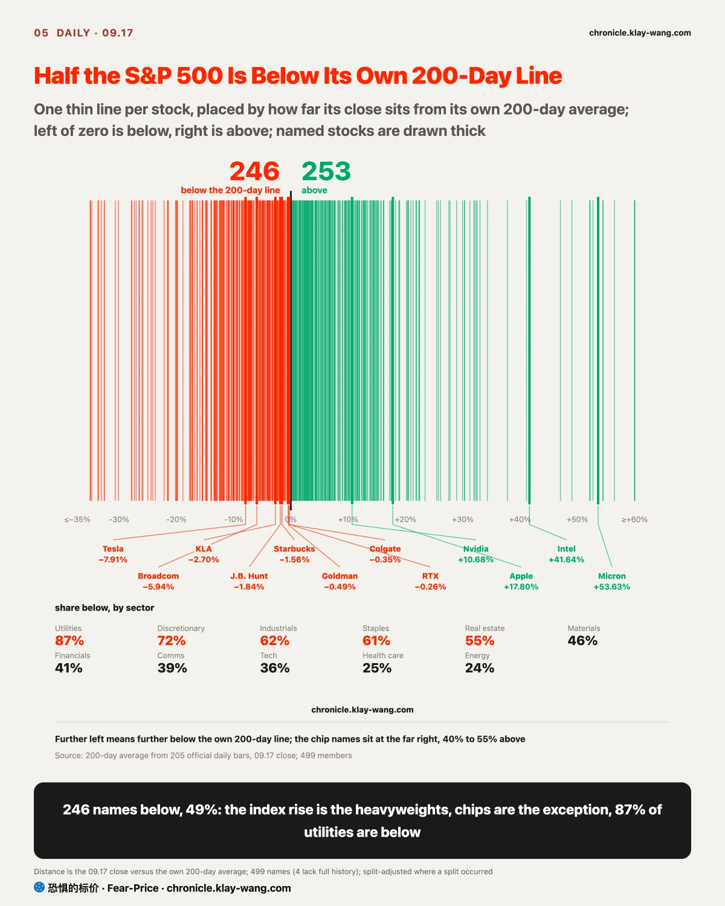

Fear-Price Index · Sep 17, 2026 · 41.5/100: one-year volatility VIX1Y at 21.72, in the 41.5th percentile of the past three years, where high means expensive. Daily ledger and definitions at chronicle.klay-wang.com · Please credit: Fear-Price Index
Fear-Price is 41.5 today, from 49.3 yesterday, a 7.8-point drop in one day. Only one day in ten over the past three years moved this much; the price of one-year insurance went back to where it stood a week before the hike.
The insurance buyers are retreating, but the mood has not improved. CNN Fear and Greed is a mood score built from market data such as breadth, junk bonds and options, 28.7 today, with only 19% of days since 2011 lower; the VIX is the price of one-month insurance on the S&P, 15.44 today. Mood score divided by insurance price is our K index, 1.86, higher than yesterday, meaning the market looks worried while fewer people actually pay for insurance. For K to break 1 the VIX must rise above 28.7 or Fear and Greed fall below 15.4, both far away today. For you, this is a day when insurance is cheap; the history is at chronicle.klay-wang.com/kindex.
The price of insuring against rates (MOVE) retreated to 76.22, only 0.22 above the line set last week. The insurance bought against a crash (SKEW) is still in the 94th percentile since 2011; what got cheaper today is insurance against an ordinary fall; the piece bought against a crash is still dear.

Yesterday long-bond ETF calls traded five times the puts, and I left one question open: would these positions be kept overnight. This morning the answer came: half. The three October strikes traded close to 80 thousand contracts yesterday and 41 thousand were still held this morning. That is a different thing from the Tesla puts bet on hike day the day before, which kept 4%, opened and closed the same day. So the money betting on long bonds is real, a bet that long rates fall after the hike has landed.
The long-bond ETF closed at 81.78, at the high of the day. Above it, 82 is where the most calls sit and also the 50-day line; the 40 thousand 83 calls only matter once that is passed. Below, 80.46 is Monday low and the low of the year; break it and this money was kept for nothing.
A quarter of the October small-cap puts stayed too. Those four lines were the largest prints in the whole market yesterday; today the small-cap ETF opened up 1.4% and closed up only 0.5%, down from the open, so the ones who stayed were not wrong during the day.
All called big prints, and the difference is what was still held the next morning: long-bond calls half, small-cap puts a quarter, Tesla puts 4%. When you see a big print in your broker app and want to follow, check this number first, not the volume that day.

The S&P rose 1.13% today, but the opening price was already 1.21% above yesterday close, and from open to close it fell 0.07%, on eight tenths of yesterday volume. The equal-weight S&P rose only 0.48%, so the gain was in the heavyweights. Why the high open: the insurance bought before Wednesday meeting was sold as a group today, the VIX fell from 17.71 to 15.44, down 12.8%, and when insurance is unwound the index gets pushed up. Nobody paid for this rise during the day; if you hold an index fund, it only counts if tomorrow open does not give it back.
Tomorrow is the quarterly expiry. The S&P ETF closed at 762.6 and the strike with the most contracts expiring is 760. Below, 750 is where the most puts sit, and yesterday low of 749.6 is right on it; above, 775 is the 20-day high and 779 the August high. My read is tomorrow trades between 750 and 768; only above 768 do market makers buy with the move, below it they chop.
What was bought with real money after the open was chips and memory. Intel opened 3.6% up and added 3.9% during the day on 1.2 times normal volume; Supermicro added 6.1% during the day on twice normal volume; AMD, SanDisk and Micron each added 2% to 3% after the open. Nvidia and Broadcom only moved with the index. Sold after the high open were Tesla, up 2.6% at the open and down 0.35% during the day, and the small-cap ETF, closing near the low of the day.
Last Friday I wrote that the week had sold the AI hardware names that rose most in August, and set one condition: the semiconductor ETF and the long-bond ETF leading on the same day after the hike would take that back. Both led their groups today, so it is taken back: the money that left last week was buying again, and it bought Intel, AMD, SanDisk and Micron.

Of the 42 names we track, one-month insurance is cheaper than yesterday on 38, banks the most. A one-month put on 100 Goldman shares cost about 4180 dollars yesterday and 3790 today. Bank premiums rose three days running from Monday to Wednesday and fell back below Tuesday in one day, which in dollars is back to last Friday.
So half of yesterday call that banks were the ones repriced on hike day is taken back: the three-day mark-up was bought for the meeting and sold once it passed. The price half stands. On a day the whole market rose, JPMorgan managed 0.11% and Citi and Wells Fargo fell. Goldman low today at 922 was the lowest in two months, and the close at 951 sits right on the 200-day line at 948, with the 50-day line at 1035, 9% away. On valuation Goldman trades at 13.9 times earnings, cheaper than on 89% of days in the past three years. Cheap, insurance retreated, sitting on its 200-day line, and still nobody buys. Banks right now are cheap and unwanted, and my read is the turn waits for the odds of another hike in October to come down from 51%; until then whether 948 holds is a chart question, and even if it holds nobody chases.
S&P one-month insurance (30-day protection) retreated from 14.46 to 12.30, below last Friday; the price of insuring against rates, MOVE, fell from 80.73 to 76.22, only 0.22 above the 76 line set last week. Yesterday I said stocks had started buying October insurance; with the S&P back below 14 today that half is taken back too, that batch was bought ahead of tomorrow quarterly expiry.
Only four names saw one-month insurance rise, all chips. One-year insurance rose on the whole chip group, Intel, Supermicro, AMD, SanDisk and Micron without exception, while one-year insurance on the indexes and the banks fell. Same day, one-month insurance on chips got cheaper and one-year got dearer: the people buying chips are chasing and buying insurance that expires a year out at the same time. The chasers know the position is high.
How high: Micron is 54% above its 200-day line, AMD 54%, SanDisk 52%, Intel 42%. But on valuation these four are two different things. Micron trades at 21.9 times earnings, dearer than that on seven days in ten over the past year, and what it is pricing is the accounts; it closed at 977, a pullback would land on the 50-day line at 927, resistance at 1042. Intel is still losing money and has no PE, it trades at 6.2 times book, dearer than on 99.8% of days in the past five years, and whoever buys it is buying future accounts; today high of 111 is the 20-day high. The money coming back is real, but at this position, if it were me, either wait for the pullback to the 50-day line, or wait until tomorrow quarterly expiry has passed and this group still closes above today, which would show someone is willing to take the other side at this height.
The financials ETF is more direct. Puts expiring within a month outnumbered calls seven to one, and someone bought three put strikes expiring January 2027, December 2027 and December 2028, over twenty thousand contracts each, struck 10% to 20% below the price. Most of the one-month bank insurance was sold; one-to-two-year insurance was being bought. Insurance bought for a meeting is sold once the meeting passes; insurance bought for a whole hiking cycle stays. If you hold banks, watch the latter.

246 of the S&P 500 closed below their own 200-day average, 49%. The 200-day line is the average cost of the past year; with half the stocks under it, the index rise rests on the other half, which is what the equal-weight S&P rising only 0.48% means. By sector, 87% of utilities are below, and consumer discretionary, industrials and staples are all above 60%; chips are the other extreme, Micron, AMD and SanDisk sit more than 50% above their own 200-day lines.
It is not only small companies below the line. Starbucks, J.B. Hunt, RTX, Colgate and KLA all closed under their own 200-day lines today, KLA the deepest at 2.7%; Goldman broke below yesterday and barely closed 0.4% back above today. If you hold an index fund, your gain came from that handful of chips and the other half did not follow; the fewer stocks rising, the sharper the fall.

Tesla was up as much as 4.5% during the day and closed up only 2.26%. The Samsung trial production of its AI5 chip opened it higher, and half of that was sold during the day. But the option money is all on the upside: the 370 call expiring next week traded close to three times its open interest, the five strikes from 365 to 400 all added, and there is no put of any size. It now sits in the middle, the 50-day line at 351 holding underneath and the 200-day line at 398 pressing from above, closed at 366, one step from 370 where the most calls sit. Someone was selling during the day while the options are all bets on up; whether tomorrow open holds today low of 363 matters more than the news.
Nvidia rose 2.54%, 2.09% of it at the open and only 0.44% during the day, moving with the index. It is the cheapest of this group on valuation, 27.4 times earnings, cheaper than on 99% of days in the past five years, yet nobody is betting on it a year out in options, one-month and one-year insurance both retreated, and the money is only on next week: six call strikes from 220 to 232.5 expiring next week traded 156 thousand contracts together. Cheap and nobody pays for it, that is where Nvidia stands, much like the banks.
SpaceX closed at 154.81, 19 cents below the 155 call that expires tomorrow. That contract has over 60 thousand open and still closed at 1.74 dollars with one day left, the market betting on an open above 155 tomorrow. The same day someone went the other way: a 155 put expiring a month out was opened for 39 thousand contracts, more than twenty times its prior open interest, struck right at the price. Today high of 156.9 is the 20-day high. Only one side can be right; if you hold SpaceX, watch which side of 155 tomorrow open lands on.
Micron and SanDisk were bought during the day, SK Hynix opened higher. All three bought calls two weeks to a month out; the Micron 1000 call traded close to four times its open interest. The Intel CEO said memory prices are soaring, and one-year insurance rose on all three.
No trading advice, only prices converted into numbers you can judge yourself.
If you hold banks: Goldman at 13.9 times, sitting on its 200-day line at 948, one-month insurance got cheaper today, about 390 dollars saved on 100 shares. But someone is buying one-to-two-year insurance in size, guarding against this hiking cycle squeezing bank profits for two years. Cheap and unwanted; the turn waits for the odds of an October hike to come down from 51%, and until then even a hold at 948 draws no buyers.
If you hold chips and memory: today gain was bought during the day, more reliable than an opening print, but Micron is 54% above its 200-day line and Intel trades at a higher multiple of book than on 99.8% of days in five years; at this position, if it were me, wait for the pullback. The chasers are buying one-year insurance at the same time, and Broadcom insurance was cheaper on only 4 days in the past year, the cheapest in the group.
If you hold Tesla: the upside money is at 365 to 400 and nobody bought a fall, yet half the gain was sold during the day. Before buying the 370 call with the chasers, see whether tomorrow open holds 363.
If you hold nothing and are waiting: nobody paid for today rise during the day, the index only opened higher, half the members are still below their 200-day lines, and the dip you were waiting for did not come. Tomorrow is quarterly expiry, and the S&P most likely trades between 750 and 768.
加息第二天，为议息买的保险集体卖掉：我们盯的 42 只里 38 只一个月的保险在降价，给 100 股高盛买一个月保险比昨天便宜约 390 美元，周一到周三涨上去的 370 美元一天退回。昨天写加息那天跌得最狠的是银行，今天收回一半：保费那部分是为议息临时买的，议息一过就卖了；股价那部分还在，全市场涨的日子摩根大通只 +0.11%，花旗富国还在跌。高盛 13.9 倍市盈率，比近三年 89% 的时间便宜，收盘 951 正压在 200 日线 948 上，就是没人买。银行现在是便宜但没人要，转机要等 10 月再加息的概率从 51% 往下走。
不要被标普的涨骗了。标普 +1.13%，开盘价就比昨天收盘高 1.21%，开盘到收盘 −0.07%。为议息买的保险集体卖掉，VIX 从 17.71 掉到 15.44，指数是被这个推上去的，白天没人掏钱。开盘后真掏钱买的只有芯片和存储：英特尔高开 3.6% 白天再涨 3.9%；超微白天再涨 6.1%；AMD、闪迪、美光开盘后各再涨 2% 到 3%，上周被卖掉的那批今天全被买回来了。但美光离 200 日线 54%、英特尔 42%，估值又是两种东西：美光 21.9 倍，涨的是账，回踩位置在 50 日线 927；英特尔没有盈利，市净率 6.2 倍比过去五年 99.8% 的时间都贵，买的是以后的账。追的人自己也在买一年期的保险。这个位置如果是我，等回踩。
明天季度期权到期，标普 ETF 收 762.6，下面 750 是看跌堆最多的一档，上面 775 是 8 月高点，大概率在 750 到 768 之间来回。特斯拉夹在 50 日线 351 和 200 日线 398 中间，钱全押下周 370 到 400 看涨，明天开盘守不守 363 是关键。SpaceX 收 154.81，明天到期的 155 看涨差 19 美分，同一天有人新开 3.9 万张一个月后的 155 看跌。
今天值得带走的三句话：为加息买的保险一天卖掉大半，标普的涨全在高开里；上周卖掉的钱回到了芯片，这个位置如果是我等回踩；银行和英伟达是同一种状态，便宜但没人为它花钱。